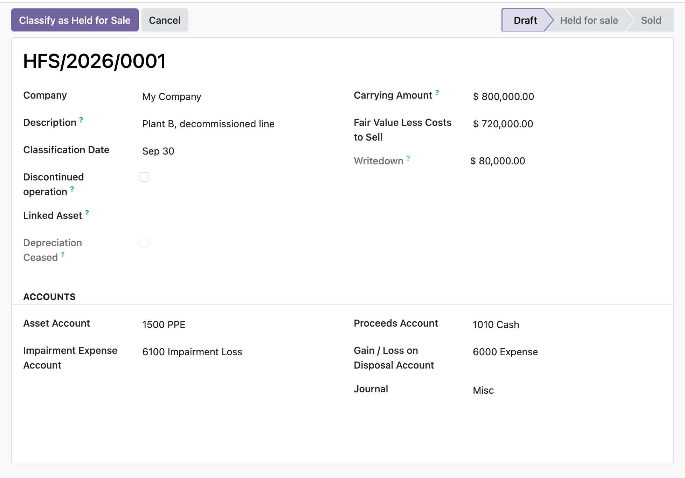

Classify a non-current asset or disposal group as held for sale, remeasure it to the lower of carrying amount and fair value less costs to sell, cease its depreciation, and post the disposal gain or loss on sale, all inside Odoo 17 Community.
On classification the item is remeasured to the lower of carrying amount and fair value less costs to sell, and the shortfall posts as a write-down (IFRS 5.15). A stored writedown field always shows the excess.
Classification sets depreciation_ceased, and when a fixed asset is linked it is paused through its own API so the depreciation cron skips it while held (IFRS 5.25). Cancellation resumes only an asset this record paused itself.
Recording a sale posts proceeds against the carrying amount and books the difference to the gain or loss account, then zeroes the carrying amount. The item can carry a discontinued-operation flag for separate presentation (IFRS 5.33).
A manager opens a held-for-sale record, links the store's fixed asset, and clicks Classify. The carrying amount is seeded from the asset's net book value, a write-down to fair value less costs to sell posts through the asset's impairment engine, and depreciation is paused. At the next reporting date a Remeasure records a further fall, or a partial reversal capped at the cumulative write-downs already booked. When the sale completes, Record Sale posts the proceeds, derecognises the asset and books the gain or loss, all under manager control and stamped to the audit trail.
In the shipped code today, each one a place where a cheaper module silently does the wrong thing.
A remeasurement upward reverses prior write-downs but is capped at the cumulative net debit posted to the impairment account for this item, so the carrying amount is never lifted above pre-classification value (IFRS 5.22). Excess is held at the ceiling, not posted.
When a fixed asset is linked, the carrying amount is taken from the asset's ledger net book value rather than a hand-keyed figure, the asset is paused, and write-downs route through the asset engine so the asset subledger and the held-for-sale carrying amount cannot diverge.
Once classified, the carrying amount is locked against hand edits; it can only change through the sanctioned Remeasure action. A raw attempt to reset a held or sold item back to draft is blocked unless a manager drives it through Cancel.
An asset already paused when classified is left untouched and not stamped, so a later cancellation does not wrongly reactivate an asset the user had deliberately paused itself.
A missing asset, impairment, proceeds, gain or loss account, a missing journal, or a sale of an unclassified item each raise an explicit message instead of posting a half-formed entry.
odoo 19 held for sale, IFRS 5 odoo, discontinued operations odoo, fair value less costs to sell, disposal group accounting, cease depreciation held for sale, non-current asset disposal odoo, impairment write-down reversal, asset disposal gain loss odoo, held for sale journal entry, odoo community IFRS accounting, fixed asset held for sale

Held for sale, remeasured to fair value less costsAn IFRS 5 non-current asset held for sale, written down from its carrying amount to fair value less costs to sell, with the write-down and any disposal gain or loss booked to the ledger.
Premium ERP Heritage modules that extend the same stack, each built to the same engineering bar.
Bring Employment Hero onboarding workflows, employee goals and contractor flags into Odoo Community as real recor...
End to end French B2B and B2G electronic invoicing for the DGFiP reform, generating Factur-X PDF/A-3 with embedde...
Accept ZainCash wallet payments in Iraq at your Odoo checkout, on the ZainCash Payment Gateway v2 with OAuth2, re...
Sync Employment Hero ATS recruitment job openings into the standard Odoo Recruitment app, mapping each opening on...
The New Zealand country pack for the ERP Heritage Employment Hero integration